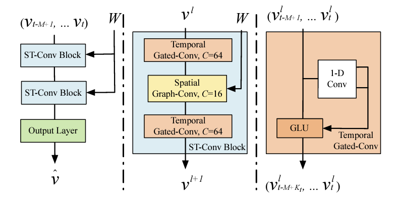
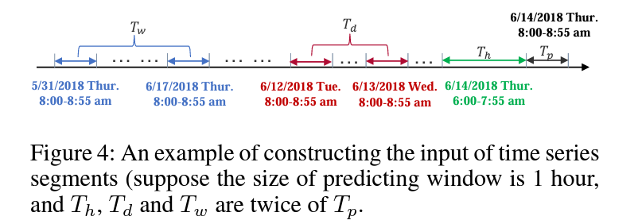
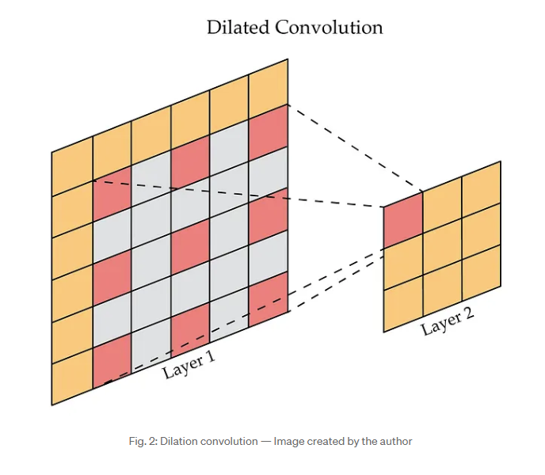
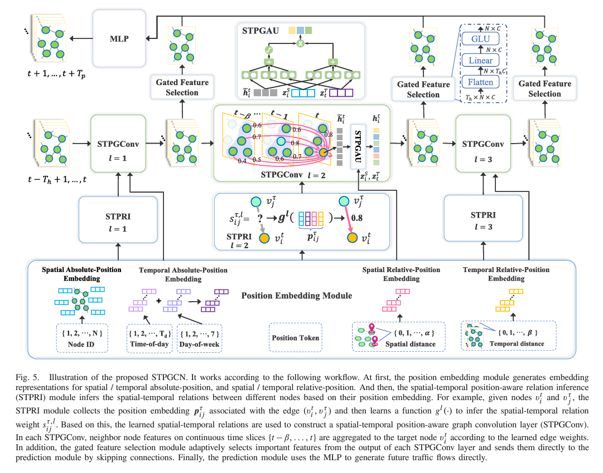
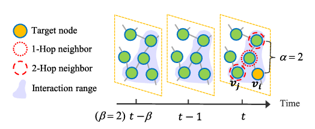

15 Traffic Flow Forecasting
15.1 Spatio-Temporal Graph Convolutional Networks (STGCN)
These notes refer to the conference publication B. Yu (2018) code implementation is provided at github.com
15.1.1 Graph Convolutions
Similar to ASTGCN presented in Section 15.2, STGCN utilizes graph convolutions and temporal convolutions in order to compute spatial correlations in the graph data representations.
The graph convolution operator, “*_{\mathcal{g}}” is used for identifying the spatial correlations in the data:
\Theta *_{g} x = \Theta(L)x = \Theta(U \Delta U^{T})x = U\Theta(\Delta)U^{T}x
Again, the graph Fourier basis U \in \mathbb{R}^{n\times n} is used in order to transform the computation space of the convolution to the spectral space. This Fourier basis is the matrix of eigenvectors of the normalized graph Laplacian L. See this lecture on the normalized Laplacian matrix for more information …
L = I_{n} - D^{-\frac{1}{2}}WD^{-\frac{1}{2}}
15.1.1.1 The Normalized Laplacian
Important Definitions:
- multiset: a generalization of the concept of a set. Unlike a set which allows for only one instance of each of its elements, a multiset may contain multiple instances of the same element. The number of times a given element appears in the multiset is known as its multiplicity. As with normal sets, the order of elements is not relevant.
- cardinality: the sum of multiplicities for all elements (number of items)
Spectral Graph Theory
- What are the relationships between the structure of a given graph and the eigenvalues of a matrix associated with the graph?
- Ajacency matrix: indicates which vertices are adjacent. Eigenvalues can count closed walks, so can count edges and test bipartite-ness
- Laplacian L=D-A: positive semi-definite. Eigenvalues can count edges and number of components
- Signless Laplacian Q = D + A: unsigned incidence matrix, positive semi-definite. Eigenvalues can count edges and number of bipartite components
- Normalized Laplacian \mathcal{L} = D^{-1/2}(D-A)D^{-1/2}: normalizes the Laplacian matrix, and is tied to the probability transition matrix
- eigenvalues \in [0,2]
- multiplicity of 0 is number of components
- multiplicity of 2 is number of bipartite components
- tests for bipartite-ness
- cannot always detect number of edges
Normalizing matrices is useful.
15.1.2 Network Architecture

Components:
- two spatio-temporal convolutional blocks (ST-Conv Blocks) and FC output layer \rightarrow \hat{V}
- residual connections and bottlenecks are applied within each block
- ST-Conv Blocks contain
- one spatial graph convolution layer (in the middle)
- two temporal gated convolution layers
Graph CNNs for Extracting Spatial Features
Because the kernel computation \Theta in the graph convolution can be expensive due to O(n^{2}) multiplications with grpah Fourier basis, approximation strategies are utilized:
- Chebyshev polynomial approximation
- 1st-order approximation
15.1.3 Graph Convolution Approximations
Chebyshev Polynomials Approximation
- chebyshev polynomials are used in order to reduce the numebr of parameters required by the kernel \Theta.
- Chebyshev polynomials usually approximate kernels as truncated expansion of order K-1 \Theta(\Delta) = \sum_{k=0}^{K-1}\theta_{k}T_{k}(\tilde{\Delta})
- \tilde{\Delta} = 2\Delta/\lambda_{max} - I_{n}
- \lambda_{max} is the greatest eigenvalue of the Laplacian matrix
- Mathematical formulation for the graph convolution: \Theta *_{g} x \sim \sum_{k=0}^{K-1}\theta_{k}T_{k}(\tilde{L})x
- T_{k}(\tilde{L}) \in \mathbb{R}^{n \times n} - k\text{th} order Chebyshev polynomial, evaluated at the scaled laplacian, \tilde{L}
First Order Chebyshev Approximations
- first order approximation is used
- allows for a deeper architecture to be used
- not restricted to a specific parameterization by the polynomials
- scaling / normalization in Neural Networks ensure \lambda_{max} \sim 2
- assumptions simplify the graph convolution operation: \Theta *_{g}x \sim \theta_{0}x - \theta_{1}(D^{-1/2}WD^{-1/2})x
- \theta_{0} and \theta_{1} - shared parameters of the kernel
- W and D are also renormalized
- What does the D matrix indicate?
15.1.4 Gated CNNs - temporal feature extraction
- prior art uses RNNs (RNN-based models)
- RNNs have several critical limitations:
- time-consuming iterations
- slow response to dynamic changes
- complext gate mechanisms
- convolutional structures employed in entirety on time axis to capture temporal behaviors of traffic flows
- convolutions are faster for training
- allows for forming hierarchical representations
- each node of the graph, g, temporal convolutions explore K_{t} neighbors without padding
- reduces length of sequences by K_{t} - 1 each time
- I don’t have any idea what this means though …
- inputs to temporal convolutions - length- m sequences with C_{i} channels, Y \in \mathbb{R}^{m \times C_{i}}
- reduces length of sequences by K_{t} - 1 each time
- Definition of gated temporal convolution: \Gamma *_{\tau} Y = P \odot \sigma(Q) \in
\mathbb{R}^{M - K_{t} + 1} \times C_{0}
- is generalizable to the 3D convolution
15.1.5 Spatio-Temporal Convolutional Block
- (spatial) graph convolutions are combined with gated (temporal) convolutions
- temporal -> spatial -> temporal
- residual connections applied for improved training / avoid overfitting
- layer normalization used to prevent overfitting too
- General expression: v^{l+1} = \Gamma^{l}_{1} *_{\tau} \text{ReLU}(\Theta^{l}
*_{g}(\Gamma_{0}^{l} *_{\tau} v^{l}))
- \Gamma_{0}^{l} - upper temporal kernel in block l
- \Gamma_{1}^{l} - lower temporal kernel in block l
- \Theta^{l} - spectral kernel of graph convolution
- full structure:
- 2 ST-Conv Blocks
- 1 Temporal Convolution
- Fully connected layer to outputs
15.1.6 Prediction Task
- goal - predict speeds of cars for each of n nodes
- loss - L2 loss function
15.1.7 Experimental Evaluation / Study
Datasets
datasets contain key info of traffic observations / geographic information with corresponding timestamps
- BJER4 - Beijing Municipal Trafic Commission
- PeMSD7 - California Department of Transportation
Data Cleaning
- linear interpolation used for imputation
- data inputs normalized (z-score method)
Data Formatting
- separate methods are utilized in order to convert traffic data into the proper format for graph network analysis.
15.1.8 Topic Study Shortlist
- gated sequential convolutions
- what does it mean for these convs. to be gated? [DONE]
- what are chebyshev polynomials and how are they used to approximate convolutions?
- what are first-order approximations of the graph laplacian (see page 3 of STGCN paper) - kipf and welling 2016
- what does it mean for graph convolutions to be stacked vertically as opposed to being computed horizontally like traditional convolution operations
- what are gated linear units? (GLU) for non-linearity
- waht is linear interpolation imputation?
actually, understanding the theory behind these mechanisms is not especially relevant for my work. I simply need to know what the approximation is that they used for their computations. i.e. - we need to know the results, not how they were obtained.
15.1.9 What are Gated Convolutions?
Notes based on article from serp.ai
- Gated Convolutions - specific type of convolution that include a gating mechanism
- a sigmoid activation function determines which part of the input should be passed to the output and which parts should be “gated” or suppressed
Process
- input is convolved with a filter (like a regular convolution)
- before the result is generated, the input (after convolving) is passed through the gating mechanism
- sigmoid activation determines the part of the input are passed to the output, and which are suppressed (hence gated)
- use zero-padding - ensure output only depends on past inputs and doesn’t depend upon future inputs.
- this strategy might imporove interpretability - it may be easier to understand why certain predictions are made based on the results of the gating mechanism
- no activation is further applied after the gating mechanism has run
Gated Convolutions in STGCN
- Gated convolutions used in the Temporal Convolution Layer
- when the activation function (gating mechanism) is the “GLU”, the following formula is used: $$(x_{p} + x_{in}) (x_{q})
15.1.10 Approximated Convolutions (Chebyshev Polynomial Approximations)
Notes based on the youtube video Convolutions and Polynomial Approximation by kieransquared
- Approximations - finding a sequence of polynomials, P_{1}, P_{2}, P_{3} such that P_{n} converges to f
- An introduction to spectral graph theory
- spectral graph theory is based on the idea that specific properties of a given graph can be extracted from the eigenvalues, or approximate eigenvalues of a given adjacency or laplacian matrix representation of a graph.
15.1.11 What is linear interpolation?
- imputation method which assumes a linear relationship between missing and non-missing values.
- Assume you have three points, A, B, and X with features a and b (all have the same features). for A and B, the value of a and b are known, but for X, only the value of a is known. in this case, the missing value is calculated as the line between A and B, say f(x), such that f(x) = \frac{A_{b} - B_{b}}{A_{a} - B_{a}}x + c and c is some constant (intercept or bias). Then, X_{b} is approximated by f(X_{a}) \sim X_{b}
- Alternatively, some more specific linear interpolation polynomial can be specified.
15.2 Attention Based Spatial-Temporal Graph Convolutional Networks for Traffic Flow Forecasting
In this paper, S. Guo (2019) proposed a method for traffic flow prediction which utilized an attention based spatial-temporal graph convolutional network. They aimed to model several time-dependencies: (1) recent, (2) daily-periodic, and (3) weekly-periodic dependencies. The attention mechanism captures spatial-temporal patterns in the traffic data and the spatial-temporal convolution is used to capture spatial patterns while standard convolutions describe temporal features.
15.2.1 Core Contributions of ASTGCN
Difficulties of the traffic forecasting problem
- it is difficult to handle unstable and nonlinear data
- prediction performance of models require extensive feature engineering
- domain expertise is necessary
- cnn - spatial feature extraction from grid-based data, gcn - describe spatial correlation of grid based data
- fails to simultaneously model spatial temporal features and dynamic correlations of traffic data
- The convolution component of the network is meant to capture the neighborhood feature context surrounding each node - in a spatial temporal model, this means that a three dimensional kernel is required to account for the time dimension
- the spatial-temporal influence of different edges / connections between nodes varies across different time points.
Addressing these issues:
- develop a spatial-temporal attention mechanism
- learns dynamic spatial-temporal correlations of traffic data
- temporal attention is applied to capture dynamic temporal correlations for different times
- the attention mechanism learns the
- Design of spatial-temporal convolution module
- has graph convolution for modeling graph structure
- has convolution in temporal dimension (kind of like 3-d convolution)
- the output of the model is a label (for the state of traffic flows) at each node in the traffic network
Related Work:
- two main types of convolutions for graph data
- spatial methods - directly perform convolution filters on a graph’s nodes and their neighbors
- Niepert et al. propose a heuristic linear method for selecting the neighborhood of every center node
- spectral methods -
- spatial methods - directly perform convolution filters on a graph’s nodes and their neighbors
- Attention Mechanisms - mechanisms select inofmration important to current task from all of the inputs.
- Xu et al. -> two mechanisms (image description task) - visualization method used for showing effect of the attention mechanism
- Velickovic et al. -> used “self-attentional layers” for processing graph data by neural networks
- Liang et al. -> multi-level attention network for adaptively adjusting correlations among multiple geographic time series. (it is time consuming to train separate models for each time series though)
15.2.2 Primitives
Traffic networks are defined as undirected graphs G=(V,E,A)
- $V = $ set of |V| = N nodes
- E is a set of edges (connectivity between nodes)
- A \in \mathbb{R}^{N \times N} - the adjacency matrix of G
- F measurements are detected with the same sampling frequency
- each node has a feature vector of length G at each time slcie
15.2.3 Problem Setting
Traffic flow forecasting is formally defined as follows:
- Suppose F time series (states) are recorded for a traffic flow sequence
- pick the f\text{th} time series: f \in (1,\dots,F)
- x_{t}^{c,i} \in \mathbb{R} - value of c\text{th} feature of node i at time t
- x_{t}^{i} \in \mathbb{R}^{F} - feature vector for node i at time t
- X_{t} = \langle x_{t}^{1}, x_{t}^{2},\dots, x_{t}^{N} \rangle ^{T} \in \mathbb{R}^{N \times F} - set of feature vectors associated with all nodes at time t
- \chi = (X_{1}, X_{2},\dots, X_{\tau})^{T} \in \mathbb{R}^{N \times F \times \tau} - set of features for all nodes (X_{t}\text{s}) over \tau time slices
15.2.4 The ASTGCN Model Framework
There are three independent componetns to the ASTGCN framework. Each, respectively, is designed for modeling (1) the recent, (2) daily-periodic, and (3) weekly-periodic dependencies of the historical data.
!(The ASTGCN Framework)v2x/imgs/astgcn.png
Each of the three time segments are grouped into segments of size T_{h}, T_{d}, and T_{w} respectively

Recent time segments: graph states (features for each node in the graph at a given time) (X_{t_{0} - T_{h} + 1}, X_{t_{0}- T_{h} + 2, \dots, X_{t_{0}}}). In other words, this segment includes the previous T_{h} - 1 times intervals / series. This includes all of the time series within the segment
Daily-periodic segments: a series of intervals of length T_{p}, distributed evenly across T_{d}/T_{p} days of length q (q is the number of samples which are measured per day, so to go to the sample whichw as recorded one day ago at the same time, you need to go to the t_{0} - q + 1 sample)
\begin{align*} & (X_{t_{0} - (T_{d}/T_{p})\cdot q + 1},\dots,X_{t_{0} - (T_{d}/T_{p})\cdot q + T_{p}}, \\ & X_{t_{0} - (T_{d}/T_{p} - 1)\cdot q + 1},\dots,X_{t_{0} - (T_{d}/T_{p})\cdot q + T_{p}}, \\ & X_{t_{0} - (T_{d}/T_{p} - 2)\cdot q + 1},\dots,X_{t_{0} - (T_{d}/T_{p})\cdot q + T_{p}}, \\ & \mskip 2mu \vdots \\ & X_{t_{0} - (1)\cdot q + 1},\dots,X_{t_{0} - (1)\cdot q + T_{p}}\\) \end{align*}
Weekly-periodic segments:
\begin{align*} & (X_{t_{0} - 7\cdot (T_{w}/T_{p})\cdot q + 1},\dots,X_{t_{0} - 7\cdot(T_{w}/T_{p})\cdot q + T_{p}}, \\ & X_{t_{0} - 7\cdot (T_{w}/T_{p} - 1)\cdot q + 1},\dots,X_{t_{0} - 7\cdot(T_{w}/T_{p})\cdot q + T_{p}}, \\ & X_{t_{0} - 7\cdot (T_{w}/T_{p} - 2)\cdot q + 1},\dots,X_{t_{0} - 7\cdot(T_{w}/T_{p})\cdot q + T_{p}}, \\ & \mskip 2mu \vdots \\ & X_{t_{0} - 7\cdot (1)\cdot q + 1},\dots,X_{t_{0} - 7 \cdot (1) q + T_{p}}) \end{align*}
NOTE: Although the ASTGCN models and such can be used through PyTorch geometric (library) The original publication and repository includes support for the standard pytorch functions which may be more straightforward to convert into a CrypTen (CrypTensor) model.
15.2.5 Things I don’t Understand …
- what is the hadammard product?
- the hadamard product is simply the element-wise matrix multiplication of two matrices
- what does it mean to transform the graph convolution setting into the spectral basis, and why is the fourier transform needed to do this? Is it even important for me to answer this question given the setting of the paper itself?
- Probably not important. We will need to understand this theory when doing the writeups, for write now, we just need to know the actual polynomial functions used so we can implement them securely.
15.3 Graph WaveNet
Notes for Graph WaveNet for Deep Spatial-Temporal Graph Modeling Z. Wu (2019)
15.3.1 Contributions
- Methodology uses a stacked dilated 1D convolution in order to get better temporal representations - longer range time series sequences can be processed effectively
- Automatically learns new graph structures - showing hidden spatial dependencies using a “self-adaptive adjacency matrix”
- open source git repository
15.3.2 Methods
- Use a graph convolution layer:
- incorporates graph signal diffusion with K finite steps
- also utilize an adaptive adjacency parameter with learnable embedding parameter dictionaries for nodes in the graph
- Temporal Convolution Layer:
- uses gating mechanisms and dilated causal convolution networks for handling long sequences
- allows for increased receptive field size (expands range while requiring less depth for the network)
- gated TCN layers are stacked in order to improve handling of spatial dependencies at different temporal levels.
15.3.3 Experiments and Evaluation
- experiments conducted on the METR-LA and PEMS-BAY datasets
- baselines
- ARIMA - auto-regressive integrated moving average with Kalman filter
- FC-LSTM - RNN with fully connected LSTM hidden units
- WaveNet - Conv net for sequence data
- DCRNN - diffusion conv recurrent neural nets - combine graph convs. with RNNs in encoder-decoder manner
- GGRU - graph gated recurrent unit network (attention mechanisms used in graph conv.)
- STGCN - spatial-temporal graph convolution network
15.3.4 Questions
- what is an adaptive dependency matrix (as it relates to the learning of the model?)
- receptive field - region of the input image that is used to compute the output of a particular neuron in the feature map. The receptive field is important because it determines the context or the information that the neuron has access to when making a prediction - see medium.com
- what is the receptive field of a convolution?
- What are “stacked dilated 1D convolutions”? See WaveNet for more information on this topic
dilated convolutions - dilated convolutions perform convolutions, but add zeros between the elements of the filter. This expands the receptive field of a given computation by expanding the region of the input covered by a given convolution, but doesn’t increase the number of parameters required to obtain the output. A nice image of this can be seen below:

Dilated Convolution Representation
- What does it mean for the adjacency matrix representation of the graph to be “self-adaptive”, and learnable?
- Why is a node’s representation called a node’s “signal” in this work?
- what is a transition matrix?
- I believe this idea originates from this paper: DCNNs
- What is a power series, and how is it applied to a transition matrix?
- What is a TCN layer, let alone a “Gated TCN”? (does this just mean gated temporal convolution?)
- What are gating mechanisms in RNNs, and what are they used for?
- How are graph network structures constructed from the data? See the experimental setup section for more information.
- What is all of this forward-backward adaptive adjacency matrix learning stuff they mention?
- do they train the graph representation of the traffic flow data separately from the actual graph modeling?
15.3.5 Ideas
- integrate alternative gated TCN functions g(\cdot) in order to compare performance in the secure setting. How can this be used as part of a discussion on theory? Is ther even enough time to do this in the project?
- compare the performance of spatio-temporal graph networks along different axes …
- comparative analysis for grpah models - accuracy (MAE/MAPE/RMSE) tradeoffs and running time comparisons (especially for a secure implementation)
15.4 ST-SSL
Use this as a benchmark for everything else. We want to figure out what were the other top models to evaluate. This paper is very recent, and it comes out of a top conference (AAAI)
15.5 STPGCN
PyTorch repository for this model The Notes from this section are based on the paper: “Spatial-Temporal Position-Aware Graph Convolution Networks for Traffic Flow Forecasting” Y. Zhao (2023)
15.5.1 Contributions
- introduce a spatial-temporal graph representation - models (1) spatial, (2) temporal, and (3) joint spatial-temporal correlations
- develop a position embedding module - encodes spatial-temporal position factors and relation inference module - learn dynamic spatial temporal edge weights
- the authors try to incorporate node-specific patterns and information (from historical data) to improve prediction accuracy at each node. They propose a graph operator,
STPGConvfor this purpose, as it captures a wide range of spatial, temporal, and joint spatial-temporal correlations - the network computes spatial-temporal relations in using a pure graph convolution approach. no external temporal components are required, which improves overall efficiency (at least according to their experimental results)
- design an L-layer network based on the
STPGConvoperation- includes skip connections
- gated selection modules
- these additions help to overcome problem of vanishing gradient and feature over-smoothing
- concatenate features generated by multiple network layers to get an MLP predictor that directly predicts multi-step traffic flows
- typical layer count is L=3. possesses fewer parameters, is computationally efficient
15.5.2 Methods
Zhao et al. propose a novel model and graph convolution architecture for predicting traffic flows based on spatio-temporal information:

Step 1: formulate the graph
- the spatio-temporal graph is represented as a series of \beta time steps t,t-1,\dots,t-\beta where each time step is represented by a graph \hat{A} \in \mathbb{R}^{N \times N}. \begin{align*} A_{STP} = \begin{array}{ccccccc} & & t & t-1 & \dots & t - \beta & \\
t & [ & \hat{A} & \hat{A} & \dots & \hat{A} & ] \end{array}\end{align*}
\hat{A} is an \alpha-hop adjacency matrix of the road network: a picture of these hops can be seen below:

spatio-temporal connection range each element of \hat{A}, the adjacency matrix, is given as follows: \hat{A}_{ij} = \begin{cases} 1 & \text{if SDist}(v_{i}, v_{j}) \le \alpha, \\ 0 & \text{if the shortest path between } v_{i} \text{ and } v_{j} > \alpha \end{cases} in other words, if the shortest path between any two nodes in the spatial direction is of a distance less than \alpha, then there is an \alpha-hop edge which connects the two nodes - hence a 1 fills that connection label in the matrix \hat{A} Graph Edge Weights
Step 2: Set edge weights for the unweighted graph
- spatial and temporal absolute-position embeddings
- spatial embeddings are defined - represent the absolute position of a given vector z^{S} = [z_{1}^{S}, z_{2}^{S}, \dots, z_{N}^{S}] \in \mathbb{R}^{N \times d}
- temporal embeddings are defined similarly z^{S} = [z_{1}^{T}, z_{2}^{T}, \dots, z_{N}^{T}] \in \mathbb{R}^{T_{d} \times d} where Z_{t}^{T} = z_{m}^{D} + z_{n}^{W}.
- z_{m}^{D} - the temporal position embedding for the day - \{1,2,\dots,T_{d}\}
- z_{n}^{W} - the temporal position embedding for the week- \{1,2,\dots,7\}
- these are summed together to obtain the temporal position embedding
- spatial and temporal relative-position embeddings
- these embeddings encode the relative distances between two nodes
- relative spatial and temporal distances between two nodes given as the shortest paths between them across each dimension: \begin{align*} & \text{SDist}(\cdot,\cdot) \rightarrow a \in \{0,1,\dots,\alpha\} \\ & \text{TDist}(\cdot,\cdot) \rightarrow b \in \{0,1,\dots,\beta\} \end{align*}
- the temporal distance can be no more than \beta, and the spatial distance can be no greater than \alpha.
- when a=0, the two nodes are in the same position (spatially)
- when b=0, the two nodes are in the same time slice
- distance values, a and b -> discrete label tokens and generate trainable embedding vectors
- Spatial and temporal relative-position embedding vectors generated as: \begin{align*} & Z^{SD} = [z_{0}^{SD}, z_{1}^{SD}, z_{2}^{SD},\dots,z_{\alpha}^{SD}] \in \mathbb{R}^{(\alpha + 1) \times d} \\ & Z^{TD} = [z_{0}^{TD}, z_{1}^{TD}, z_{2}^{SD}, \dots, z_{\beta}^{TD}] \in \mathbb{R}^{(\beta + 1) \times d} \end{align*}
- it’s not obvious to me what the d symbolizes …
- spatial-temporal position-aware relation inference
- this module takes the embeddings generated for each node, and uses them to map the value of weights for each edge in the graph (dynamic - can change for different time steps)
- you have a node v_{i}^{t} with candidate neighbors v_{j}^{\tau} in the interaction range i,j \in \{1,2,\dots,N\}, t \in \{1,2,\dots,T_{h}\}, \tau \in \{t-\beta, t-\beta+1,\dots,t\} and t-\beta > 0
- S^{t} = \{s_{ij}^{\tau}|i,j=1,\dots,N;\tau=t-\beta,\dots,t\}\in \mathbb{R}^{N \times (\beta + 1)N}
- denote dynamic weights for all spatio-temporla edges
- A^{t}_{STP} = S^{t} \odot A_{STP} - element-wise multiplication of the edge weights by the adjacency matrix.
- each element of S^{t}, s_{ij}^{\tau} is given by s_{ij}^{\tau} = \begin{cases} g(p_{ij}^{\tau}) & \text{if SDist}(v_{i}^{t}, v_{j}^{\tau}) \le \alpha \\ 0 & \text{otherwise} \end{cases}
- p_{ij}^{\tau} is the position feature vector
- p_{ij}^{\tau} = [z_{i}^{S} || z_{j}^{S} || z_{t}^{T} || z_{\tau}^{T} || z_{a}^{SD} || z_{b}^{SD}] \in \mathbb{R}^{6d}
- z_{i}^{S}, z_{t}^{T} - spatial / temporal position info of node v_{i}^{t}
- z_{j}^{S}, z_{\tau}^{T} - spatial / temporal position information of node v_{j}^{\tau}
- z_{a}^{SD}, z_{b}^{TD} - spatial / temporal distance between v_{i}^{t} and v_{j}^{\tau}
- g(\cdot) is a learnable Gaussian kernel for mapping weights from embedding vector inputs
- g(p_{ij}^{\tau}) = \exp\left(-\frac{1}{2}(p_{ij}^{\tau} - \mu)^{T}\sum^{-1}(p_{ij}^{\tau} - \mu)\right)
- \sum = \text{diag}(\sigma) - trainable diagonal covariance matrix
- \mu \in \mathbb{R}^{6d} - trainable mean vector
- \sigma \in \mathbb{R}^{6d} - trainable variance vector
Step 3: Perform Spatial-Temporal Position-Aware Graph Convolution
- joint spatial-temporal node feature aggregator
- in each
STPGConvlayer, the dynamic spatial-temporal edge weights are generated based on the position embedding p_{ij}^{\tau} - weight summation function is constructed: \begin{align*}
& \tilde{H}^{t,l} = \phi_{stpgcn}(A_{STP}^{t,l}, \hat{H}^{t,l-1}) = S^{t,l}\hat{H}^{t,l-1} \\
& \text{where } \hat{H}^{t,l-1} = [H^{t,l-1};\dots;H^{t-\beta,l-1}] \in \mathbb{R}^{(\beta+1)N \times C}
\end{align*}
- represent node features output from layer l-1 on \beta + 1 time slices
- in each
- spatial-temporal position-aware gated activation unit
Spatial-Temporal Graph Construction
- Mathematical formulation: \begin{align*} A_{STP} = \begin{array}{ccccccc} & & t & t-1 & \dots & t - \beta & \\
t & [ & \hat{A} & \hat{A} & \dots & \hat{A} & ] \end{array} \\
A_{ij} = \begin{cases} 1 & \text{if SDist}(v_{i}, v_{j}) \le \alpha \\
0 & \text{otherwise} \end{cases} \end{align*}
- \hat{A}_{ij} represents an \alpha-hop adjacency matrix of the traffic road network
- this means that connections over \alpha edges between nodes are represented in the graph structure.
- \hat{A}_{ij} represents an \alpha-hop adjacency matrix of the traffic road network
Spatial and Temporal Relative-Position Embedding
- describes the spatial-temporal proximity between different nodes
- helps identify the relative positions between separate nodes
- relative position embeddings are trained to encode distances
- a = SDist() and b = TDist(), where a=0 means two nodes have the same spatial position, and b=0 means two nodes have the same temporal position (are taken from the same time slice)
- values a and b are label tokens which have trainable embedding vectors z_{a}^{SD} and z_{b}^{TD} for each token
Spatial-Temporal Position-Aware Relation Inference
15.5.3 Evaluation
15.5.4 Questions
- I still don’t know what “Gated Activation Units” are
16 Trajectory-Based Traffic Forecasting
16.1 T-Wave
Notes for T-Wave introduced in B. Hui (2021)
16.1.1 Contributions
16.1.2 Methods
16.1.3 Experiments
16.1.4 Questions
- How are trajectory sequences / data actually constructed as inputs to the model?
- How can I obtain access to the code for these models?
- How are the traffic segments structured? They utilize the same methods of dilate spatial temporal convolutions as Graph-WaveNet, but use the trajectory data in order to structure the actual graph data. I don’t really understand their representations too well.
16.2 MA2GCN
Notes on “MA2GCN: Multi Adjacency Relationship Attention Graph Convolutional Networks for Traffic Prediction Using Trajectory Data” Z. Sun (2024)
16.2.1 Contributions
- authors provide methods for converting trajectory-based datasets for traffic flows prediction into graph networks.
- they also provide code implementations
- their graph constructions consider entry and exit matrices for the different grids they construct.
- Their graph analysis framework is extremely similar to graph wavenet, but their adaptive graph generator is unique:
- multi-adjacency relationship attention?
16.2.2 Methods
- utilizes a multi-adjacency relationship attention module to try and accurately learn the spatial information of the input
- focuses on the more important adjacency matrices which are input?
- how many adjacency matrices are input to the model? shouldn’t there be a single matrix representing the entire graph / range of the data or do they divide the data / area of coverage into separate grids and then input them together? The process used here is not very clear.
16.2.3 Experiments / Evaluation
- They use the Shanghai taxi GPS trajectory dataset, and convert it into a graph using their novel trajectory-to-graph conversion methods
- they test their graph convolution routines against state-of-the-art methods for these converted graph data.
- they use the same metrics that all of the GCN analysis papers use. I don’t really like their writeups though. I’m souring on this work a bit. It would be better if we could get access to T-Wave, then we could perform some better analysis on a better model potentially.
16.2.4 Questions
- How is the actual conversion performed? I.e., how does the trajectory data look to start, and how is it converted to a graph format.
- What is the \tilde{X} matrix they metnion in the adaptive graph generator section?
- what is the notation?
- P, D, N, C - what do these symbols denote?